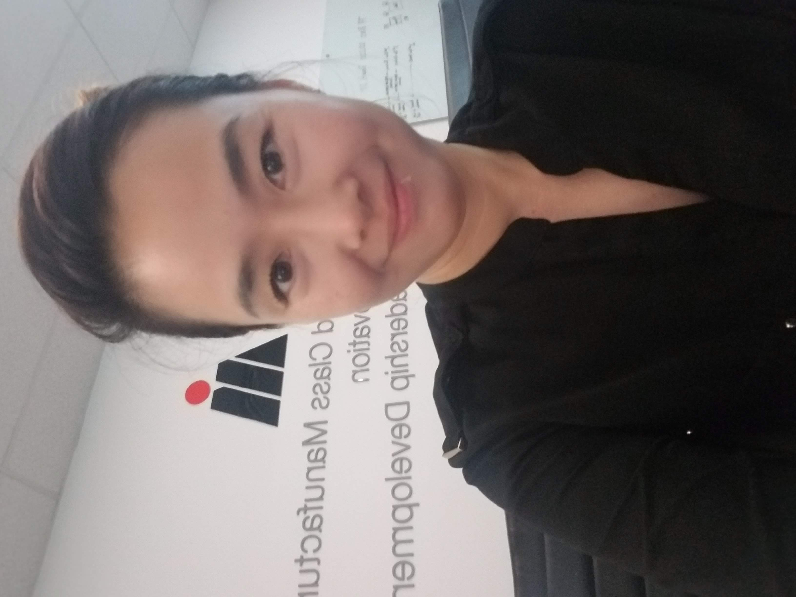

USMCA·CUSMA 무역 컴플라이언스 · 철강 · 자동차 부품
안녕하세요, 캐나다 토론토 지역에서 활동하는 무역 컴플라이언스 전문가 미셸 리우입니다. 15년 넘게 철강 가공 회사와 자동차 부품 회사가 USMCA·CUSMA 원산지 기준을 충족하고, 미국 232조 관세에 대응하고, 캐나다 재무부(Finance Canada)를 통해 보복관세를 환급받고, 캐나다 관세청(CBSA)과 미국 관세국경보호청(CBP) 규정을 지키도록 도와 왔습니다. 한국어로 편하게 상담하실 수 있습니다.

캐나다 관세청(CBSA), 미국 관세국경보호청(CBP), 캐나다 재무부에 근거 있게 설명할 수 있는 실무 중심 자문을 드립니다.
철강과 자동차 부품의 원산지 판정, 세번변경 기준과 역내가치포함비율(RVC) 분석, USMCA·CUSMA 원산지 증명, 공급업체 확인서, 원산지 검증 대응을 도와드립니다.
미국 232조 철강·알루미늄·자동차·자동차 부품 관세와 IEEPA 관세의 영향을 분석합니다. 관세 적용 검토, 철강 함량 문제, 구매 주문의 원산지와 운송 경로를 점검합니다.
미국산 철강에 붙는 캐나다 보복관세(surtax)를 캐나다 재무부에 환급 신청합니다. 증빙 자료 준비, OEM 지정 소싱 자료, 재무부 추가 질문 답변까지 지원합니다.
철강판, 도금 강판, 철강 제품, 자동차 부품(72류, 73류, 87류)과 복잡한 기계 설비의 품목 분류를 도와드립니다.
세관 감사와 검증 대응, 수입 후 정정, 내부 컴플라이언스 점검, 국경 간 출하 절차 정비와 직원 교육을 지원합니다.
미국 임시수입(TIB), HTSUS 98류(9801·9802) 재수입, 관세 감면과 환급(drawback) 제도를 안내합니다.
철강과 자동차 부품은 완성차가 되기까지 캐나다·미국·멕시코 국경을 여러 번 넘습니다. 국경을 넘을 때마다 원산지, 관세, 과세가격 문제가 생깁니다.
북미 주요 완성차(OEM)에 납품하는 1차 협력사와 철강 공급망 안에서 직접 일했습니다.
같은 협정입니다. 캐나다는 CUSMA, 미국은 USMCA, 멕시코는 T-MEC라고 부릅니다. 예전 NAFTA를 대신한 북미 자유무역협정입니다.
아닙니다. 품목 분류에 따른 원산지 기준(보통 세번변경 기준, 역내가치포함비율, 또는 둘 다)을 충족해야 합니다. 자동차 제품에는 추가 규정도 있습니다. 부품마다 분석하고 근거 자료를 남겨야 합니다.
네. 어떤 수입 건이 해당되는지, 관세가 어떻게 적용되는지, 소싱·운송 경로·서류에 따라 부담이 어떻게 달라지는지 검토해 드립니다.
캐나다 재무부가 일정한 경우에 보복관세(surtax)를 돌려주는 제도입니다. 예를 들어 캐나다 안에서 구할 수 없는 물품이거나 기존 계약 때문에 꼭 필요한 경우입니다. 신청할 때는 증빙 자료가 가장 중요합니다.